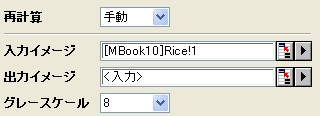
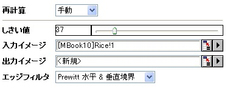

imgEdge
メニュー情報
エッジ検出
概要
エッジを検出します。
コマンドラインでの使用法
1. imgedge t:=10;
2. imgedge t:=7 f:=shv img:=mat(1) oimg:=mat(2);
変数
表示
名 |
変数
名 |
I/O
と
データ型 |
デフォルト
値 |
説明 |
| しきい値 |
t |
入力
int
|
0
|
エッジピクセルを決定するのに使用するしきい値を指定します。ピクセルに対して決められた差がこの値より大きいと、そのピクセルはエッジピクセルになります。
|
| 入力イメージ |
img |
入力
Image
|
<active>
|
操作する画像を指定します。デフォルトの入力はアクティブイメージです。
|
| 出力イメージ |
oimg |
出力
Image
|
<input>
|
出力画像を指定します。デフォルトで、出力画像は入力画像と同じです。
|
| エッジフィルタ |
f |
入力
int
|
lh
|
適用するエッジ検出フィルタを指定します。
オプションリスト
- ソーベル演算子を使って垂直エッジを検出します。
- ソーベル演算子を使って水平エッジを検出します。
- ソーベル演算子を使って水平・垂直エッジを検出します。
- プレウィット演算子を使って垂直エッジを検出します。
- プレウィット演算子を使って水平エッジを検出します。
- プレウィット演算子を使って水平・垂直エッジを検出します。
- ラプラシアン演算子を使って水平・垂直エッジを検出します。
- ラプラシアン演算子を使って通常のエッジを検出します。
- ラプラシアン演算子を使って通常のエッジを検出します。Laplace 2とは異なる方法となります。
- ラプラシアン演算子を使って対角エッジを検出します。
- ラプラシアン演算子を使って水平エッジを検出します。
- ラプラシアン演算子を使って垂直エッジを検出します。
- グラディエントフィルタを使って北西エッジを検出します。
グラディエントフィルタを使って北東エッジを検出します。
- グラディエントフィルタを使って東エッジを検出します。
- グラディエントフィルタを使って南エッジを検出します。
- グラディエントフィルタを使って南エッジを検出します。
- グラディエントフィルタを使って南西エッジを検出します。
- グラディエントフィルタを使って西エッジを検出します。
- グラディエントフィルタを使って北西エッジを検出します。
|
説明
imgedge 関数は、エッジフィルタを使って入力画像のエッジを検出します。多くのフィルタが利用でき、異なる画像処理を実行することができます。
このXファンクションはカラー画像とグレースケール画像の両方で動作します。
サンプル
次のサンプルでは、入力画像をグレースケールに変換し、物体のエッジを検出します。
- 新しい行列を作成し、\Samples\Image Processing and AnalysisフォルダにあるRice.bmp ファイルをインポートします。
- 画像をアクティブにして、「イメージ：変換：カラーからグレーに」を選択して、 imgC2gray Xファンクションのダイアログを開きます。
- ダイアログで、下の図のように設定を変更して、OK ボタンをクリックしてXファンクションのimgUserfilterダイアログを開きます。

これは入力画像をグレースケール画像に変換します。
- 「イメージ：空間フィルタ：エッジ」を選択して、imgEdge Xファンクションダイアログを開きます。
- ダイアログで、下の図のように設定を変更して、OK ボタンをクリックしてXファンクションのimgUserfilterダイアログを開きます。

新しい画像が作成されます。エッジ検出の結果を表示します。
-
他のサンプルについては、XFスクリプトダイアログ(F11を押す)をご覧下さい。
アルゴリズム
計算には、LEADTOOLS Main APIのL_EdgeDetectorBitmap() を使用しています。詳細は、LEADTOOLS Main API Version 14 ヘルプファイルを参照し、トピックL_EdgeDetectorBitmapを読んでください。
参考文献
LEADTOOLS Main API Help file, Version 14
関連のXファンクション
imgUserfilter